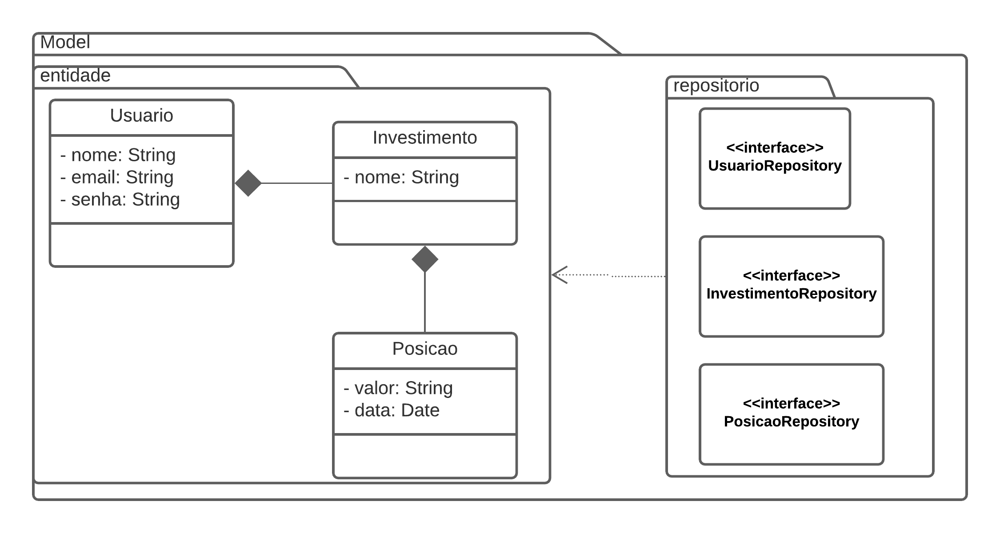
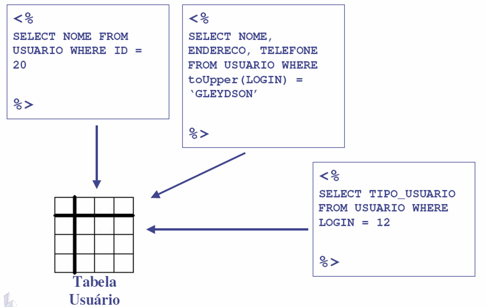
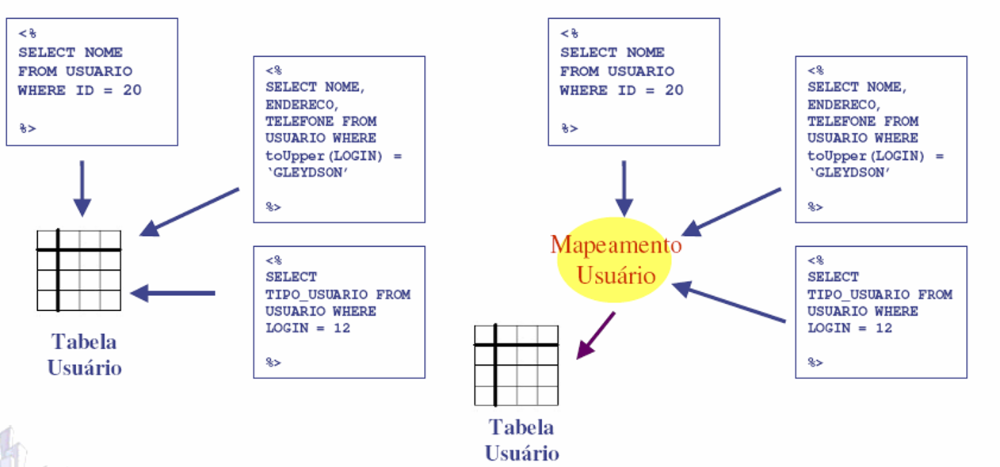
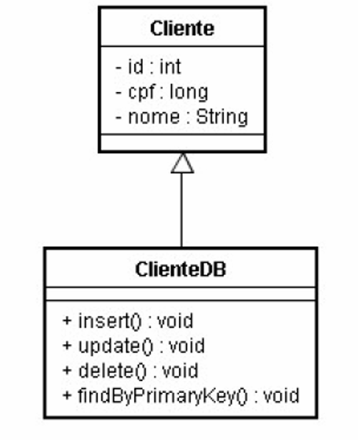
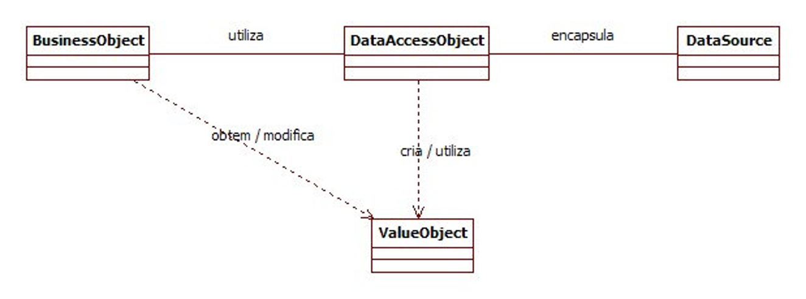
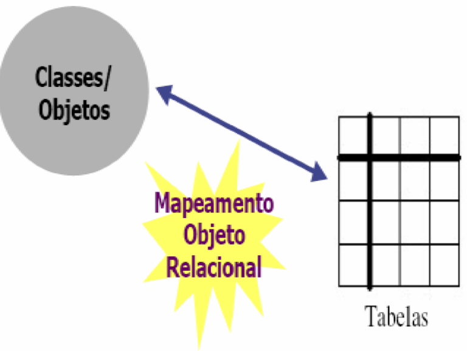
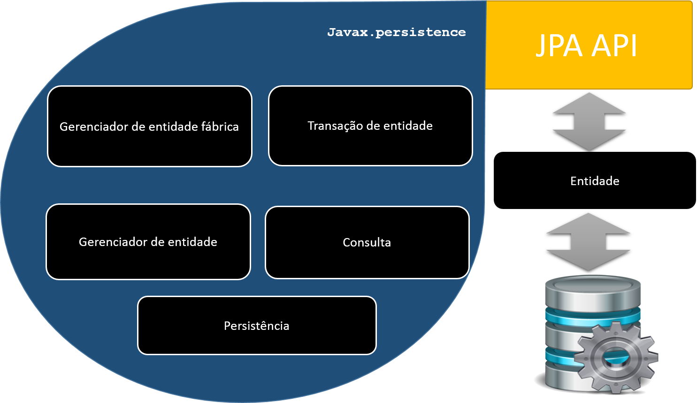
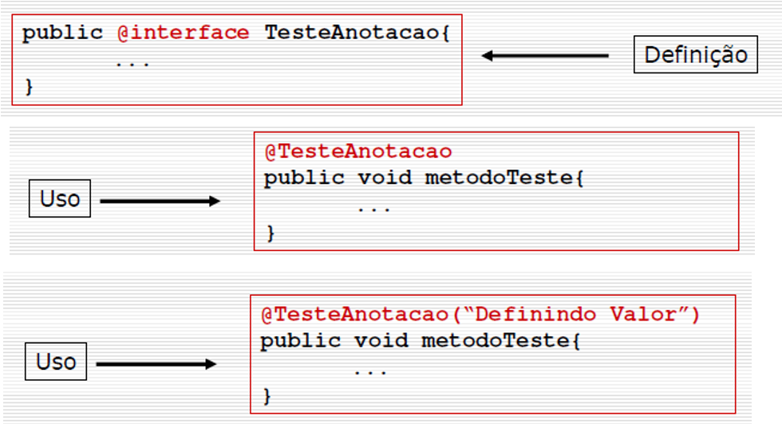
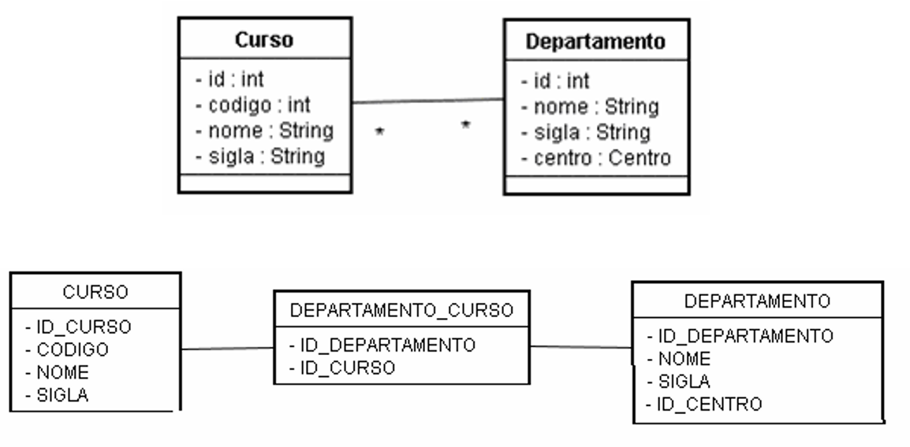
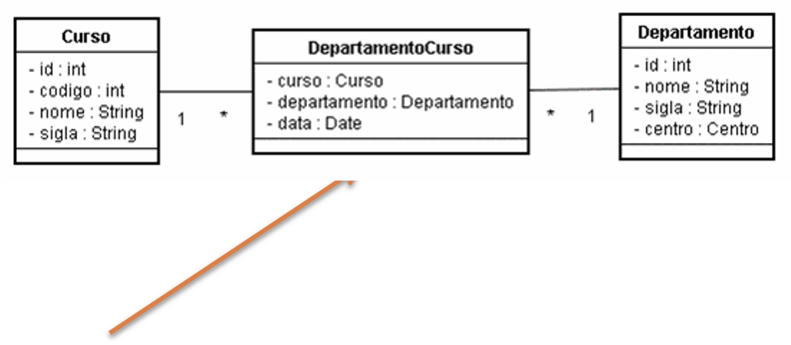

name: inverse class: center, middle, main-title # Implementando a Camada Modelo Laboratório de Programação --- # Objetivo - montar a base de dados exemplo - construir as classes de entidade - construir as classes de acesso a dados --- #Visão de Classes <center>  </center> --- # Montando o banco de dados - Vamos usar na aula Postgres (https://www.postgresql.org/download/) - mas se quiser pessoalmente escolher outro, tudo bem - Como usuário postgres: ```sql CREATE USER u_patrimonio WITH PASSWORD 'p_patrimonio' CREATEDB; create database patrimonio; grant all privileges on database patrimonio to u_patrimonio; ``` - Baixe algum cliente para facilitar sua vida. Ex: Dbeaver --- #Tabela Usuário: <center> <img src="Untitled.png"> </center> ```sql CREATE TABLE public.usuario ( id_usuario serial NOT NULL, nome varchar(60) NOT NULL, email varchar(60) NOT NULL, senha varchar(256) NOT NULL, CONSTRAINT usuario_pk PRIMARY KEY (id_usuario) ); ``` --- #Tabela Investimento: <center> <img src="Untitled.png"> </center> ```sql CREATE TABLE public.investimento ( id_investimento serial NOT NULL, nome varchar(100) NOT NULL, usuario_id integer NOT NULL, CONSTRAINT investimento_pk PRIMARY KEY (id_investimento), CONSTRAINT investimento_fk FOREIGN KEY (usuario_id) REFERENCES public.usuario(id_usuario) ); ``` --- #Tabela Posição: <center> <img src="Untitled.png"> </center> ```sql CREATE TABLE public.posicao ( id_posicao serial NOT NULL, valor numeric(3) NOT NULL, data_referencia date NOT NULL DEFAULT now(), investimento_id integer NOT NULL, CONSTRAINT posicao_pk PRIMARY KEY (id_posicao), CONSTRAINT posicao_fk FOREIGN KEY (investimento_id) REFERENCES public.investimento(id_investimento) ); ``` --- class: center, middle, main-title # Mapeamento Objeto-Relacional com JPA --- # Objetivo - Definir uma arquitetura para o mapeamento objeto relacional; - Diminuir dependência com a fonte de dados; - Reduzir redundância de código; - Estudar padrão DAO para Mapeamento Objeto-Relacional (MOR) - Aprender MOR usando JPA --- # Abordagem SQL <center>  </center> - Vantagem: velocidade, - Desvantagem: acoplamento, dependência, replicação de código --- # Segunda abordagem, ainda SQL - separa as dependências e cria um controlador SQL para operações <center>  </center> - Vantagem: melhora a primeira abordagem, e OO - Desvantagem: não possui reutilização de código --- # Terceira Abordagem - Mapeamento herda domínio <center>  </center> - Vantagem: diminui acoplamento - Desvantagem: só é possível fazer operações se houver instancia filha --- # Quarta Abordagem - DAO - Data Access Object - Abstrai e encapsula todo o acesso a uma fonte de dados; - Gerencia a conexão com a fonte de dados para obter e armazenar os dados; - Garante a independência do mecanismo de persistência. --- # Quarta Abordagem - DAO <center>  </center> --- # Estrutura do DAO - BussinesObject: - Contém a lógica de negócio - `Serviço` - Requer acesso à origem dos dados para obter ou armazenar dados. - DataAccessObject: - Permite acesso transparente à origem dos dados; - Tipicamente os `Repository` ou `DAO` - Podem possuir implementações genéricas - ValueObject: - Representa um objeto de dados utilizado para transporte dos dados entre as camadas do sistema. - `Entidades` - DataSource: Representa a implementação da origem dos dados. --- # MOR - Mapeamento Objeto-Relacional <center>  </center> --- # Uma solução em Java - JPA - Java Persistence API <center>  </center> --- # O que muda? - Cada tabela/relacionamento do banco deve ser mapeado na forma de objetos - Utiliza-se `Anotações` - Em Java `@Algo` <center>  </center> --- # Exemplo: ```java import javax.persistence.*; @Entity @Table(name="aluno", schema=“exemplo") public class Aluno { @Id @GeneratedValue(strategy = GenerationType.IDENTITY) @Column(name="id_aluno") private int id; private int matricula; private String nome; private long cpf; //Construtor padrão public Aluno(){} //Métodos getters e setters //... } ``` --- # Anotações básicas - `@Entity`: informa que a classe mapeada é persistente - `@Table`: informa nome da tabela correspondente. - name: nome da tabela; - schema: nome do esquema no banco de dados onde está a tabela. - Necessário apenas se nome da tabela é diferente do nome da classe e a tabela está em esquema diferente de public. --- # Anotações básicas - `@Id`: define chave primária. - `@GeneratedValue`: define mecanismo de geração da chave primária. - strategy = GenerationType.IDENTITY - `@Column`: - name: define nome da coluna que mapeia atributo. - unique: unicidade ou não; - nullable: coluna nula ou não; - length: tamanho da coluna; - precision: precisão; - insertable: atributo deve ser inserido ou não; - updatable: atributo deve ser atualizado ou não --- # Anotações de associação - Um-para-um; - Muitos-para-um; - Um-para-muitos; - Muitos-para-muitos --- # Anotação: `@OneToMany` - Uma universidade possui N centros - no contexto da universidade ```java public class Universidade { ... @OneToMany(mappedBy = "universidade") // esta é a Referência private List<Centro> centros; ... } public class Centro { ... @ManyToOne @JoinColumn(name = "universidade_id") // esta é a Referência private Universidade universidade; ... } ``` - existem ainda opções para Fetch, Cascade, OrderBy ... --- # Anotação: `@ManyToOne` - Um centro possui 1 universidade - no contexto da centro ```java public class Centro { ... @ManyToOne @JoinColumn(name = "universidade_id") //está é a FK private Universidade universidade; ... }``` --- # Anotação: `@OneToOne` - Um cargo na empresa só possui um empregado ```java public class Cargo { ... @OneToOne(mappedBy ="empregado_id") private Empregado empregado; ... }``` --- # Anotação `@ManyToMany` - Exemplo onde as entidades possuem chaves simples <center>  </center> --- # Anotação `@ManyToMany` - Adicionar Anotação - Usar `@JoinTable` na origem ```java public class Curso { ... @ManyToMany @JoinTable( name = "departamento_curso", //nome da tabela no meio joinColumns = @JoinColumn(name = "departamento_id"), //chave do destino inverseJoinColumns = @JoinColumn(name = "curso_id")) //chave da origem Set<Departamento> departamentos; ... }``` --- # Anotação `@ManyToMany` - No destino, precisa usar apenas mappedBy ```java public class Departamento { ... @ManyToMany(mappedBy = "departamento_curso") Set<Curso> cursos; ... }``` --- ##Anotações: relacionamentos com chaves compostas <center>  </center> - Necessário criar o objeto que representa a chave composta - Na tabela, use `@EmbeddedId` ao invés de `@Id` - Use a anotação de entidade `@Embeddable` --- # Implementando ```java @Embeddable class DepartamentoCursoPk implements Serializable { @Column(name = "departamento_id") Long departamento; @Column(name = "curso_id") Long curso; } ``` ```java @Entity class DepartamentoCurso { @EmbeddedId DepartamentoCursoPk id; @ManyToOne @JoinColumn(name="departamento_id") Departamento departamento; @ManyToOne @JoinColumn(name="curso_id") Curso curso; ... } ``` --- # Existe muitas outras coisas - Dependendo da modelagem, existem outras situações - que devem ser tratadas uma a uma - Segue documentação: - <a href="https://docs.spring.io/spring-data/jpa/docs/1.5.0.RELEASE/reference/html/jpa.repositories.html">JPA Repositories</a> - <a href="https://spring.io/projects/spring-data-jpa#overview">Spring Data JPA </a> - <a href="https://docs.jboss.org/hibernate/annotations/3.5/reference/en/html/entity.html#entity-mapping">Mapping Entities</a> --- name: inverse class: center, middle, main-title # Vamos ao código --- # Criando o projeto `Patrimônio` - Adicione as dependências: - Spring Web - Spring Web Services - Spring Data - Lombok - Postgres --- # Configurando o banco - Na pasta `resources`, edite o arquivo: `application.properties` - este arquivo pode conter todas as configurações da aplicação - pode haver vários perfis de configuração, colocados cada um num arquivo. - ex: `application-test.properties` ou `application-prod.properties` ```java @Profile("test") public class Test{} ``` - É possível colocar propriedades suas, ex: - application.name=Sistema de Patrimônio - e depois capturá-las no código com ```java @Value('${applicaton.name}') private String nomeAplicacao; ``` --- #Configs para o banco Postgres > Docs: <a href="https://docs.spring.io/spring-boot/docs/current/reference/html/appendix-application-properties.html"> Common Application Properties</a> ```java spring.datasource.url=jdbc:postgresql://localhost:5432/patrimonio spring.datasource.username=u_patrimonio spring.datasource.password=p_patrimonio spring.datasource.driver-class-name=org.postgresql.Driver ``` --- # Adicionando entidade `Usuario` - Ideia: colocar no package model.entidades - Toda `Entidade` deve ser anotada com `@Entity` ```java package com.labprog.patrimonio.model; import javax.persistence.Entity; @Entity public class Usuario { } ``` --- # Mapeando a tabela - Para garantir o nome da tabela, ou o nome da tabela no banco é diferente do nome do objeto - também é possível mapear o nome do schema, caso não seja o public ```java @Entity @Table( name="usuario") public class Usuario { } ``` --- #Adicionando os campos que serão colunas ```java @Entity @Table( name="usuario") public class Usuario { private Long id; private String nome; private String email; private String senha; } ``` --- #Mapeando as colunas - `@Column` mapeia coluna - se a coluna tiver o mesmo nome do banco, não precisa (embora recomendado) ```java @Entity @Table( name="usuario") public class Usuario { @Column(name="id_usuario") private Long id; @Column(name="nome") private String nome; @Column(name="email") private String email; @Column(name="senha") private String senha; } ``` --- #Adicionando a chave primária - Use `@Id` ```java @Entity @Table( name="usuario") public class Usuario { @Id @Column(name="id_usuario") private Long id; ``` - e por ser auto-incremento, use `@GeneratedValue` ```java @Entity @Table( name="usuario") public class Usuario { @Id @Column(name="id_usuario") @GeneratedValue(strategy = GenerationType.IDENTITY) private Long id; ``` --- ## Como vamos em algum momento retornar Usuario - Melhor ocultar `senha` usando `@JsonIgnore` ```java @Entity public class Usuario { @Id @Column(name="id_usuario") @GeneratedValue(strategy = GenerationType.IDENTITY) private Long id; @Column(name="nome") private String nome; @Column(name="email") private String email; @Column(name="senha") @JsonIgnore private String senha; } ``` --- # O próximo passo seria: - Criar os get/set - Criar o toString - para debug - Criar o construtor vazio e com argumentos - Criar o equals e o hash - para comparação em lista --- # Lombok - Para evitar de criar os códigos anteriores, podemos usar `injeção de código` com o `Lombok` - se estiver usando o VSCode, instale `vscode-lombok` - Anotações legais: - @Setter @Getter - @EqualsAndHashCode - @ToString - @NoArgsConstructor - @AllArgsConstructor - @Builder - @Data - é tudo junto - e tem mais > <a href="https://projectlombok.org/">Docs Lombok </a> --- #Adicionando Lombok nas entidades - Uma opção para `Usuario` ```java @Entity @Table( name="usuario") @Data @Builder @NoArgsConstructor @AllArgsConstructor public class Usuario {} ``` --- # Usuario completa ```java @Entity @Table( name="usuario") @Data @Builder @NoArgsConstructor @AllArgsConstructor public class Usuario { @Id @Column(name="id_usuario") @GeneratedValue(strategy = GenerationType.IDENTITY) private Long id; @Column(name="nome") private String nome; @Column(name="email") private String email; @Column(name="senha") @JsonIgnore private String senha; } ``` --- class: center, middle, main-title # Voltando ao modelo <center> <img src="Untitled.png"> </center> --- ## Partiu classe Investimento - O que já sabemos: ```java @Entity @Table(name = "investimento") @Data @Builder @NoArgsConstructor @AllArgsConstructor public class Investimento { @Id @GeneratedValue(strategy = GenerationType.IDENTITY) @Column(name = "id_investimento") private Long id; @Column(name = "nome") private String nome; } ``` --- ## Adicionando o relacionamento com `Usuario` - Use `@JoinColumn` pois é uma chave estrangeira - Use `@ManyToOne`: - many -> investimentos - one -> usuario ```java @ManyToOne @JoinColumn (name="usuario_id") private Usuario usuario; ``` --- ## Classe Investimento completa ```java @Entity @Table(name = "investimento") @Data @Builder @NoArgsConstructor @AllArgsConstructor public class Investimento { @Id @GeneratedValue(strategy = GenerationType.IDENTITY) @Column(name = "id_investimento") private Long id; @Column(name = "nome") private String nome; @ManyToOne @JoinColumn (name="usuario_id") private Usuario usuario; } ``` --- class: center, middle, main-title # Voltando ao modelo <center> <img src="Untitled.png"> </center> --- # Finalmente Posição - Parte inicial preenchida ```java @Entity @Table(name = "posicao") @Data @Builder @NoArgsConstructor @AllArgsConstructor public class Posicao { @Id @Column(name="id_posicao") @GeneratedValue(strategy = GenerationType.IDENTITY) private Long id; @Column(name="valor") private Double valor; ``` --- ##Adicionando campo de data - Padrão do Java 1.8+ LocalDate - Necessário usar Converter para o JPA ```java @Column(name = "data_cadastro") @Convert(converter = Jsr310JpaConverters.LocalDateConverter.class) private LocalDate data; ``` ou modo antigo ```java @Temporal(TemporalType.DATE) @Column(name = "data_cadastro") private Date data; ``` --- ##Adicionando relacionamento ```java @ManyToOne @JoinColumn(name="investimento_id") private Investimento investimento; ``` --- ##Posição Completa ```java @Entity @Table(name = "posicao") @Data @Builder @NoArgsConstructor @AllArgsConstructor public class Posicao { @Id @Column(name="id_posicao") @GeneratedValue(strategy = GenerationType.IDENTITY) private Long id; @Column(name="valor") private Double valor; @Temporal(TemporalType.DATE) @Column(name = "data_cadastro") private Date data; @ManyToOne @JoinColumn(name="investimento_id") private Investimento investimento; } ``` --- class: center, middle, main-title # Com as entidades, basta programar o acesso aos dados --- #Criando os `Repositories` - Para isso, usamos o `Spring Data` com `JPA` - Abstração para implementação de acesso básico > Docs: <a href="https://docs.spring.io/spring-data/jpa/docs/1.5.0.RELEASE/reference/html/jpa.repositories.html">JPA Repositories</a> - Interface `JpaRepository` provê implementação básica de métodos - a implementação é injetada no projeto - funcionalidade fornecida pelo CRUD --- #Procedimento com `JpaRepository` - Declarar a interface do repositorio - extender a `JpaRepository` ```java package com.labprog.patrimonio.model.repositorio; import com.labprog.patrimonio.model.entidades.Usuario; import org.springframework.data.jpa.repository.JpaRepository; public interface UsuarioRepository extends JpaRepository<Usuario, Long>{ } ``` --- #Spring Data - Facilita o uso de tecnologias de acesso a dados, bancos de dados relacionais e não relacionais, estruturas de redução de mapa e serviços de dados baseados em nuvem. - Derivação de consulta dinâmica de nomes de métodos de repositório - Consultas manuais consultas anotadas em `@Query` - Suporte para auditoria transparente (criado, última alteração) - Paginação de Dados --- #Projetos mais comuns: - Spring Data JPA - suporte ao repositório Spring Data para JPA. - Spring Data MongoDB - baseado em Spring, suporte a documentos de objetos e repositórios para MongoDB. - Spring Data REST - Exporta repositórios Spring Data como recursos RESTful dirigidos por hipermídia. - Spring Data Elasticsearch - módulo Spring Data para Elasticsearch. --- #Criando repositórios para as demais classes ```java package com.labprog.patrimonio.model.repositorio; import com.labprog.patrimonio.model.entidades.Investimento; import org.springframework.data.jpa.repository.JpaRepository; public interface InvestimentoRepository extends JpaRepository<Investimento, Long> { } ``` ```java package com.labprog.patrimonio.model.repositorio; import com.labprog.patrimonio.model.entidades.Posicao; import org.springframework.data.jpa.repository.JpaRepository; public interface PosicaoRepository extends JpaRepository<Posicao, Long> { } ``` --- #Mais sobre Spring Data JPA: - O proxy do repositório tem duas maneiras de derivar uma consulta específica a partir do nome do método: - Derivando a consulta diretamente do nome do método. - Usando uma consulta definida manualmente. --- ##`QueryMethod` por nome - findFirst/ findTop - findAllBy or findBy - distinct - existsBy - delete - count - orderBy - asc, desc Exemplos: ```java Optional<Usuario> findByEmail(String email); Optional<Usuario> findByEmailAndNome(String email, String nome); Optional<Usuario> findByNomeContaining(String nome); boolean existsByEmail(String email); void deleteByNome(String nome); long countByNome(String nome); ``` --- # Nomes suportados e palavras-chave | Palavra | Palavra | Palavra | Palavra | |--|--|--|--| | And | LessThan | After | Like | | Or | LessThanEqual | Before | NotLike | | Is, Equals | GreaterThan | IsNull | StartingWith | | Between | GreaterThanEqual | IsNotNull,NotNull | EndingWith | | Containing | OrderBy | Not | In | | NotIn | True | False | IgnoreCase | --- #Consultas diretas ```java @Query("select u from Usuario u where u.nome=:nomeUsuario") Usuario obterUsuarioPorNome( @Param("nomeUsuario") String nomeUsuario); ``` - Lembrando que você provavelmente vai querer usar quando for uma junção: ```java @Query("select sum(p.valor) from Posicao p join p.investimento i where i.id = :idInvestimento group by i") Double obterValorTotalInvestimento( @Param(":idInvestimento") String idInvestimento); ```